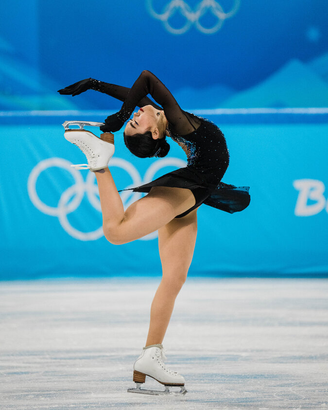
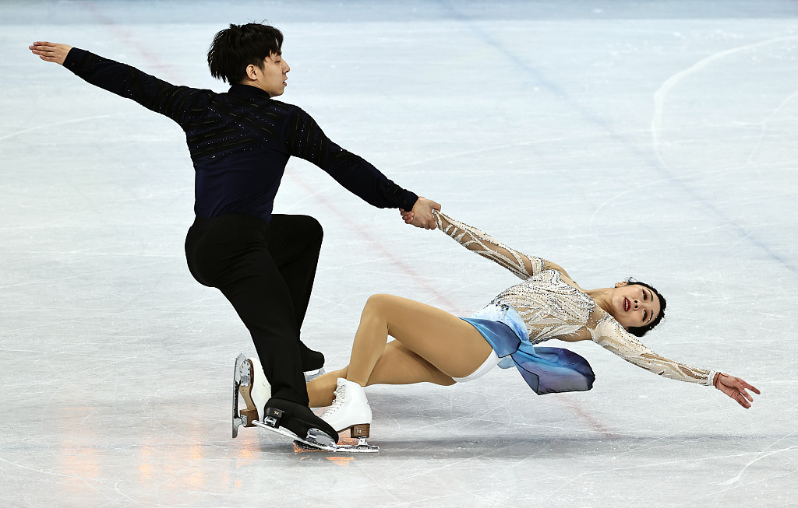
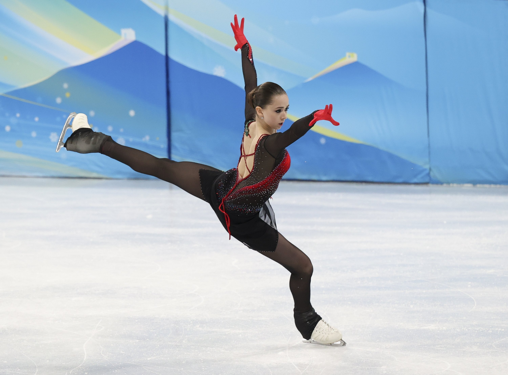

Sport emblématique des Jeux Olympiques d'Hiver, le patinage artistique allie puissance athlétique, grâce et expression artistique sur glace. Les athlètes évoluent sur glace au rythme de la musique, enchaînant sauts périlleux, pirouettes et séquences chorégraphiées dans des programmes millimétrés.
Histoire aux Jeux Olympiques
Le patinage artistique est l'une des disciplines les plus anciennes des Jeux Olympiques d'Hiver, présent depuis la première édition de 1924 à Chamonix. Il était même au programme des Jeux Olympiques d'été de Londres en 1908, bien avant la création des Jeux d'hiver !
Disciplines
À Milano Cortina 2026, quatre catégories sont au programme : le simple dames, le simple messieurs, les couples et la danse sur glace. Chaque discipline possède ses propres codes, ses propres exigences techniques et son propre style artistique.

Karen Chen, équipe américaine, JO de Beijing 2022

Sui Wenjing et Han Cong, équipe chinoise, JO de Beijing 2022

Kamila Valieva, équipe russe, JO de PyeongChang 2018
Fonctionnement
Notation
Le patinage artistique est noté par un jury selon le système ISU (Union Internationale de Patinage). Chaque performance reçoit deux notes : le Score Technique (ST) qui évalue la difficulté et l'exécution des éléments, et le Programme de Composantes (PC) qui juge la qualité artistique et chorégraphique. La note finale est la somme des deux.
Eléments techniques
Les patineurs doivent maîtriser plusieurs éléments imposés : les sauts (axel, lutz, flip, salchow, boucle piquée), les pirouettes, les séquences de pas et les levées pour les couples. Chaque élément est noté selon sa difficulté et la qualité de son exécution.
Format de la compétition
Chaque compétition se déroule en deux temps : le programme court, d'une durée maximale de 2 minutes 50, où les athlètes exécutent des éléments imposés, suivi du programme libre, plus long et plus spectaculaire, où ils expriment leur liberté artistique.
Performance du Moulin Rouge par Tessa Virtue et Scott Moir à PyeongChang 2018
Epreuves
Lors des Jeux Olympiques d'hiver, le patinage artistique comprend plusieurs disciplines
Simples dames
Simples messieurs
Couples
Danse sur glace
Epreuve par équipes
Chaque discipline possède ses propres exigences techniques et artistiques, mais toutes demandent
une maîtrise parfaite des sauts, des pirouettes et une grande expressivité sur la glace.
Vivez le patinage artistique en direct !
Ne manquez pas les épreuves de patinage artistique à Milano Cortina 2026. Consultez le programme des compétitions et réservez vos places dès maintenant !